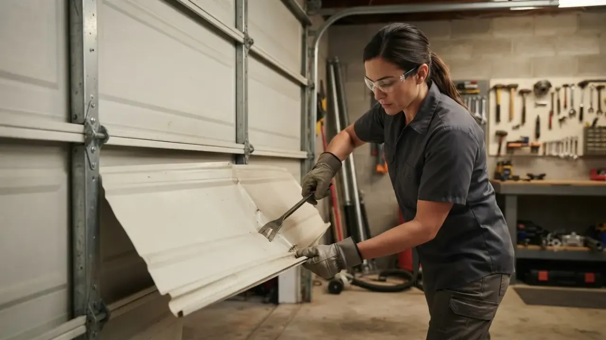

Dented, cracked, or storm-damaged panels restored to match.
Garage Door Panel Repair in Tampa
A panel that takes a hit does not always mean a whole new door. Panel repair in Tampa brings dented, rusted, or cracked sections back on steel, wood, and aluminum doors, with same-day options across Hillsborough County and replacements color-matched to blend in. One call gets curb appeal back.
Live dispatcherUpfront optionsBacked workmanship
The basics
What Is Garage Door Panel Repair?
Garage door panel repair is the straightening or replacement of a single damaged section of the door, instead of replacing the whole door. Tampa homes take a beating from salt air, summer storms, and the occasional backed-in SUV, and the damage is usually local: a dented panel, rust along the bottom rubber seal, or a crack from a spring or cable failure. A single-panel repair runs $180 to $450 installed, while a full door replacement starts around $1,200 and climbs to $3,200 for insulated carriage styles, so repairing the section is the smart money move when the tracks, springs, and opener are still sound.
What's included
What Our Panel Repair Includes
A panel job starts by proving the panel is the only problem. Here is what is included in a standard repair.
Full Door Inspection
The opener is tested and the torsion springs, cables, rollers, and tracks checked, to confirm the panel damage did not start with a bent track or worn hinge. About 10 minutes of checking stops the same failure repeating.
Panel Straightening or Swap
Small dents are worked flat with a panel lift and body tools, while creased, cracked, or rusted sections are swapped for a matching profile from Clopay, Amarr, or Wayne Dalton stock.
Hardware Re-Alignment
We re-seat hinges, verify roller alignment, and adjust the track so the repaired panel sits flush and travels without scraping. A panel that sits proud will catch the track on every cycle.
Weather Seal Check
We inspect the bottom rubber seal and perimeter weather seal. Salt air eats the bottom seal first, and a fresh seal is what keeps storm water out of the garage.
Lubrication and Test Cycle
Lubricant goes on the rollers, hinges, and springs, then the door cycles three to four times while the photo eye sensors and auto-reverse are verified.
Service overview
What Garage Door Panel Repair in Tampa Involves
Tampa homes take a beating from salt air, summer storms, and the occasional backed-in SUV. We see dented garage door panels in South Tampa, Hyde Park, and Westchase constantly, plus rust along the bottom rubber seal where the door meets the driveway and storm water sits.
We source panels from Clopay, Amarr, and Wayne Dalton so the grain, profile, and factory finish line up with your existing door. We carry common 21-inch and 24-inch sections on the truck, so if your door is a standard size we can often finish before lunch, which beats waiting two weeks for a factory-ordered replacement door.

How we workWe verify the cause, compare realistic options, and confirm the repair before we leave.
The service timeline
How Our Panel Repair Process Works
Panel work is done with the springs held safely, because a section comes off a loaded door. These five steps keep it safe and matched.
Phone Assessment
You describe the damage and text us a photo. We quote a range on the spot, usually $180 to $450 for a single panel, and book a window.
On-Site Inspection
The opener is tested, the torsion springs and galvanized steel cables checked, and the door run up and down. Ten minutes shows whether the panel is the whole problem or a symptom of something bigger.
Safe De-Tensioning
Before touching a panel we wind down the torsion springs with garage door winding bars and lock the door in the open position. No panel comes off a door under spring tension.
Panel Repair or Swap
Minor dents get worked out with a panel lift and body tools. Creased or rusted sections get swapped for a matching profile, and the hinges are re-seated so the section sits flush.
Test and Walkthrough
We re-tension the springs, cycle the door three or four times, and check the photo eye sensors and bottom rubber seal. The panel has to travel without scraping before we leave.
Tools & methods
Tools and Methods We Use
Panel repair is bodywork on a moving door. These are the tools that keep the section flush and the door safe.
Garage Door Winding Bars
Winding bars are used to safely de-tension torsion springs before any panel is removed. A panel swap on a loaded door is how people get hurt.
Garage Door Panel Lift
A panel lift supports and positions a replacement section so it seats flush with the neighboring panels without bending the hinge mounts. A section fitted without support never sits right.
Garage Door Track Bender
A track bender straightens bent vertical and horizontal track so the repaired panel travels without scraping or binding. A dented panel often comes with a bent rail behind it.
Garage Door Roller Removal Tool
A roller removal tool lets us swap worn nylon or steel rollers quickly during a panel repair without damaging the hinge or track. Rollers beside a damaged panel are often worn too.
Garage Door Torque Wrench
A torque wrench ensures hinge and bracket bolts are tightened to spec so the repaired panel does not work loose over time. Loose hinges are what make a repaired panel rattle.
Garage Door Sensor Alignment Tool
A sensor alignment tool realigns photo eye sensors after panel work so the door closes safely and passes the auto-reverse test. Panel work moves the door, and the sensors move with it.
Use cases
When to Call for Panel Repair
Panel damage is almost always local, and the fix is too. These are two jobs that show the range.

Storm-Cracked Panels, Westchase
A storm in Westchase cracked two panels and bent the track behind them. → How we handle it: We swap both cracked sections for matching profiles, true the bent rail, and cycle the door to confirm it runs smooth.
Rusted Bottom Panel, Apollo Beach
Salt air in Apollo Beach had rusted the bottom panel through where it meets the driveway. → How we handle it: We replace the bottom section, fit a fresh bottom rubber seal, and treat the panel edges against further corrosion.
Booking questions
Who fixes garage door panels in Tampa?
We do, across Hillsborough County. Our technicians are trained on LiftMaster, Chamberlain, Genie, and Craftsman systems and carry common panel sizes on the truck. Call with a photo and we can usually give you a firm range in one conversation.
Problems we solve
Panel Problems We Fix Across Tampa
Panel damage falls into a few clear patterns. Here is what we fix most in Tampa.
Dented panel from a vehicle or storm debris
A dented panel from a vehicle or storm debris is the most common call. We work minor dents flat, and replace sections that are creased or cracked with a matching profile.
Rust along the bottom panel and seal
Rust along the bottom panel and seal is what salt air and standing water do to a door. We replace the rusted section, fit a fresh bottom rubber seal, and check the panel edges for the same corrosion.
Panel cracked after a spring or cable failure
A panel cracked after a spring or cable failure is usually a symptom, not the cause. We fix the spring or cable first, then replace the panel, so the new section does not crack the same way.
Door off track scraping the panel edges
A door off track scraping the panel edges will chew through a new panel fast. We true the track and reseat the rollers before the panel is repaired, so the fix lasts.
About this service
Can you repair a dented garage door panel in Tampa?
Yes, most dents come out. If the metal is stretched but not creased, we work it flat with a panel lift and body tools in about an hour. Deep creases or punctures get a replacement section instead. We quote both options before starting.
Should I repair or replace a garage door panel in Tampa?
Repair if one or two sections are damaged and the tracks, springs, and opener are sound. Replace the whole door if three or more panels are failing, the frame is rusted through, or the door is over 20 years old and parts are discontinued. We tell you straight which one makes sense.
Can a dented garage door panel be fixed without replacing it in Tampa?
Yes, if the dent is shallow and the panel is not cracked or bent out of shape. Small dents in steel panels can often be worked out and touched up, and the door is then checked to make sure it still travels smoothly. A deep dent that has creased the metal, or damage that stops the door from closing flat, usually means the panel needs to be replaced instead. The technician will tell you honestly which option will last.
Will a repaired garage door panel match the rest of the door in Tampa?
A straightened and touched-up panel can look close, but an exact match is hard if the paint has faded in the Tampa sun. A replacement panel matches best when the door model and colour are still available, and the technician will check that before ordering. If an exact match is not available, you will be told before any work starts, so you can decide whether to go ahead or consider a full door replacement.
How do I stop my garage door panels from rusting in Tampa?
Wash the door a few times a year with mild soap and water to remove salt and dirt, and touch up any paint chips as soon as you see them, since rust starts at bare metal. Keep sprinklers from spraying the door, and clear leaves and debris from the bottom seal. Steel doors with a good finish hold up well in Tampa if the paint is maintained, while an unpainted scratch will rust quickly in the humidity.
Can a single garage door panel be repaired without replacing it?
Yes, in many cases. A shallow dent can be worked out from behind, sanded, primed, and painted, and a cracked stile can be braced with a reinforcement plate. But a repair will not hold if the steel has rusted through, the panel is bent out of square, or the hinge mounts have torn. The technician will show you the damage from inside the garage and tell you plainly whether a repair or a replacement section is the right call.
Will a repaired garage door panel match the rest of the door?
In most cases, yes. The repair is finished with paint matched to the door and checked in daylight, because Tampa sun fades paint and a match that looks right under garage lighting can look wrong from the street. Texture is matched too, so a wood-grain door does not get a flat patch. On a discontinued model where a perfect match is impossible, the technician will tell you before the work starts.
Pricing process
What Panel Repair Costs in Tampa
$180 - $900 depending on panel count and material
Panel Material
Steel is the cheapest and most common panel material. Wood and custom-profile doors cost more, and the price follows the material and the finish that has to match the rest of the door.
Number of Panels
One section is a straightforward job at $180 to $450 installed. A multi-panel repair is quoted per section, so you always see the math before approving.
Panel Availability
A size and color we stock means a same-day job. Discontinued or custom profiles go to a factory order, which adds 10 to 14 days and a shipping cost.
Cost factors at a glance
| Cost factor | What affects the price |
|---|---|
| Typical range on this page | $180 - $900 depending on panel count and material |
| Panel Material | Steel is the cheapest and most common panel material. |
| Number of Panels | One section is a straightforward job at $180 to $450 installed. |
| Panel Availability | A size and color we stock means a same-day job. |
Ranges are the ones stated on this page; you get a written estimate before work starts.
Cost questions
How much does garage door panel repair cost in Tampa?
Typical 2026 pricing runs $180 to $450 for a single panel installed, depending on material and whether we have the section in stock. Wood and custom-profile doors cost more. A multi-panel repair is quoted per section, so you always see the math.
Customer reviews
What Tampa Customers Say
★★★★★
“Backed my truck into the bottom panel and figured the whole door was done. They matched the panel color perfectly and had it done in under three hours. You honestly cannot tell it was ever damaged. Fair price and they cleaned up after themselves.”
★★★★★
“After the last storm a limb cracked two sections. They came out same day, showed me which panels could be saved and which needed swapping, and did not push a full replacement. Door runs quieter than before. Highly recommend for panel work.”
★★★★★
“I manage several rentals and use them for panel repairs. They are straight about pricing, always call before adding anything, and the doors look right afterward. Had them fix a rusted bottom section on a duplex last month and it still looks new.”
Book with confidence
What to Look for Before You Book
Panel work is visible from the street, so the match matters as much as the repair. Check these before you book.
- Before any work starts, ask for the licence number and confirm it matches the company name on the quote.
- Ask whether the replacement section will match the profile, color, and finish of the rest of the door, or just sit close.
- Insist on a written price covering the section, hardware, and labour, and ask how a bent track found mid-job gets priced.
- Ask how long the panel and the labour are covered, and get that warranty in writing rather than as a promise.
- Check that the visit ends with the door cycled several times and the safety reverse tested.
- When the technician arrives, confirm the vehicle is marked and they can say which company sent them.
Do-it-yourself and safety questions
Is a dented garage door panel a security risk?
A shallow dent is usually cosmetic and does not weaken the door. But a deep dent or a crack can be a problem: it can stop the panel from sitting flat in the track, leave a gap at the seal, and make the door easier to force. If the dent is on the bottom panel near the lock, or the panel flexes when you push it, get it checked promptly rather than leaving it.
Damage types
Dents, Cracks, and Creases: What Panel Damage Really Means
Panel damage is not all the same, and the type of damage decides whether a repair will hold. A shallow dent in a steel panel, for example from a bicycle handlebar or a basketball, is usually cosmetic: the panel is still straight, the insulation behind it is intact, and the door still seals. A crease is more serious, because the metal has folded along a line, and a folded panel is weaker at that line and can crack over time as the door flexes. A crack through the panel, or a section where the metal has split away from the frame, is structural, and it affects how the door carries its own weight.
Tampa adds its own damage patterns. Storm-blown debris can dent a panel in one storm, and the salt air near the bay can turn a small paint chip into a rust spot that eats through the steel from the inside. On older wood or composite panels, humidity can swell the material and split the joints. The technician checks not just the visible damage but the panel behind it: the stiles, the insulation, and the hinges that bolt through it. A repair that only fixes the outside while the inside is rusted through will not last.
- Shallow dent: cosmetic in most cases, and a good candidate for straightening and paint touch-up.
- Crease: the metal has folded, which weakens the panel and can spread if the door keeps flexing.
- Crack or split: structural damage that affects the panel frame and usually needs a replacement section.
- Rust-through: common where paint has chipped and salt air has reached bare steel, and it cannot be filled safely.
- Swollen joints: humidity damage on wood or composite panels, where the joints open and the panel warps.
How we fix it
How Panel Repairs Are Done Without Replacing the Section
When a panel can be saved, the repair starts with the door secured and the panel supported, so nothing moves while the work is done. A shallow dent is worked out from behind with a body hammer and dolly, the same technique used on car panels, until the surface is flat again. The area is then sanded, primed, and painted to match. For a dent that has stretched the metal, a reinforcement strut is bolted across the inside of the panel, which stops the dent from flexing back and spreads the load across the section.
Deeper damage needs more. A cracked stile can be braced with a steel reinforcement plate, and a damaged bottom rail can be rebuilt where the weather seal attaches. What a repair cannot do is put strength back into rusted-through steel or a panel that has been bent out of square. In those cases the technician will say so plainly and quote a replacement section instead, because a repair that fails in three months costs you twice.
- Dent removal: the dent is worked out from behind, then sanded, primed, and painted to match.
- Reinforcement struts: a steel strut across the inside of the panel stops a repaired dent from flexing back.
- Stile bracing: a cracked vertical stile can be braced with a plate so the hinges still have solid metal to bolt into.
- Bottom rail rebuild: a damaged bottom rail is rebuilt so the weather seal sits flat and keeps water out.
- Paint matching: the repair is finished with paint matched to the door, not a generic white, so the fix does not stand out.
Limits
When a Panel Repair Will Not Hold
A good technician will tell you when a repair is a waste of money, and panel work has clear limits. If the steel has rusted through, there is nothing solid left to fill or weld to, and any filler will crack out within months as the door flexes. If the panel is bent out of square, the door will never sit straight in the tracks, and the rollers will wear unevenly no matter how good the cosmetic repair looks. If the damage covers more than one section, or the hinges have torn through the stiles, the door is structurally compromised.
Age is the other limit. On a door that is 20 years old with a discontinued model line, a repair that holds for a year still leaves you with an old door, old springs, and old hardware, and the next failure is never far away. In that case the honest advice is to compare the repair price against a replacement section, or a full door, and choose with the numbers in front of you. We will give you both numbers before you decide, and we will not push a repair that we would not trust on our own door.
- Rust-through: filler has nothing to grip, and it will crack out as the door flexes.
- Bent out of square: the panel will never sit true in the track, and the rollers will wear unevenly.
- Torn hinge mounts: hinges need solid metal, and a stile that has torn through cannot hold them.
- Multi-section damage: when two or more sections are damaged, a full door is usually better value.
- Discontinued models: when a matching section is no longer made, a repair may be the only option, and we will say so.
After the fix
Matching Your Door After a Panel Repair
The difference between a good panel repair and a visible one is the finish. Tampa sun fades paint, so even a factory-matched color can look slightly off against a door that has spent ten years facing south. The technician checks the paint in daylight, not just under garage lighting, and blends the repair so it does not stand out from the street. Texture matters too: a smooth repair on a wood-grain embossed door will catch the eye, so the finish is matched to the door pattern wherever possible.
Window inserts and decorative hardware need the same care. If the damaged panel had a window, the insert is removed before the repair and refitted after, with the seal checked so it does not leak in a storm. If the panel had decorative handles or hinges, they are refitted in the same positions. And if the model is discontinued and a perfect match is impossible, the technician will tell you before the work starts, so you can choose between a close match and a replacement section.
- Paint in daylight: the match is checked in natural light, because Tampa sun fades paint unevenly across a door.
- Texture matching: wood-grain and embossed patterns are matched so the repair does not look flat.
- Window inserts: removed before repair and refitted with a fresh seal so they do not leak.
- Hardware refit: decorative handles and hinges go back in the same positions.
- Honest limits: if a perfect match is impossible on a discontinued model, you will know before we start.
Prevention
Preventing the Next Dent: Protecting Your Panels in a Working Garage
Most panel damage is preventable, and the fixes are cheap compared with a repair. The most common cause is the car: a bumper clipping the bottom panel while parking, or a door swinging open into the panel. A simple parking guide, a tennis ball hung from the ceiling or a floor stop, tells the driver where to stop, and it costs almost nothing. The second cause is stored items: bikes, ladders, and bins leaning against the door, which fall and dent the panels. Keeping those items away from the door, on a rack or against a side wall, removes the risk.
Children and sports are the third cause. A basketball hoop mounted above the garage door guarantees that the door will be hit, and a bike rack that faces the door does the same. Moving the hoop to the driveway and the rack to the side wall protects the panels without stopping the play. And the bottom panel deserves extra care, because it takes the most damage from bumps and water: a rubber parking stop and a bottom seal that is kept in good shape will protect it. None of these measures is expensive, and together they can save the cost of a panel repair every few years.
- Parking guide: a tennis ball from the ceiling or a floor stop tells the driver where to stop.
- Keep items clear: bikes, ladders, and bins should be stored away from the door, not leaning on it.
- Move the hoop: a basketball hoop above the door guarantees the door will be hit.
- Protect the bottom panel: a rubber parking stop and a good bottom seal take the knocks instead.
- Touch up chips: paint chips should be touched up before rust starts, especially near the bottom.
Related services
Related Services

Garage Door Repair
General repair covers the whole system, not just the panels. If the door is off track, noisy, or binding as well, this is the service that fixes it all in one visit.
Garage Door Spring Repair
When a torsion spring snaps, the door turns into dead weight and the opener strains against it. We fit matched pairs, wind them with proper bars, and balance the door so it holds level.
Garage Door Opener Repair
After a storm-season surge, openers often hum, trip the breaker, or drop their remote pairing. We repair LiftMaster, Chamberlain, Genie and Craftsman units and check the safety reverse before we leave.Ready when you are
Get Your Garage Door Panel Repair in Tampa Today
If a panel is dented, rusted, or cracked, text us a photo and we will quote a range on the spot. Most single-panel repairs run $180 to $450, and same-day options are available across Hillsborough County.

Talk with the local team
Request Garage Door Panel Repair
Call, text or email and a real person answers, day or night. Tell us what the door is doing and we will give you a price range on the spot plus the soonest arrival window. Most calls placed before mid-afternoon get a same-day visit anywhere in Hillsborough County.